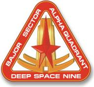
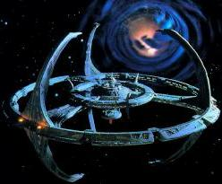

|
|
Deep Space Nine |
|
|||
|  | |||
|  |
Dimensioni
Diametro massimo: 1.451,82 metri
Diametro dell'anello degli habitat: 579,12 metri
Diametro massimo della parte centrale superiore: 285,90 metri
Diametro massimo della parte centrale mediana: 182,88 metri
Diametro massimo della parte centrale inferiore: 184,46 metri
Diametro massimo della sala operazioni: 59,43 metri
Altezza della parte centrale: 368,80 metri
Altezza dei pilone d'attracco: 192,02 metri
Numero di ponti: 72 (Empok Nor)
Disposizione dei servizi
Anello Abitativo e Alloggi: servizi per il personale, tre piattaforme di
lancio per i runabout, reattore
di microfusione (Empok Nor).
Passeggiata: tavoli da gioco, bar, negozi, holosuite, tempio
bajoriano,
rifornimento di cibo non replicato, ufficio della sicurezza, infermeria.
Livello 1: ufficio del Comandante, sala comando;
Livello 3: alloggio di Garak (livello H-3,
stanza 901) (The Wire);
Livello 5: deposito di armi (sezione 3) il cui accesso è consentito a personale
con livello di sicurezza 7 o superiore (Captive
Pursuit);
Livello 7: bar di Quark (sezione 5) (Playing
God);
Livello 17: alloggio di Quark (Who
Mourns for Morn?).
Livello 22: laboratorio scientifico (sezione 22) (Playing
God);
Stazione spaziale di elaborazione mineraria costruita dai
Cardassiani nei pressi di
Bajor e battezzata Terok Nor; la
stazione è diventata operativa nel
2346 (Wrongs Darker Than Death or Night).
Dopo la liberazione di Bajor dal dominio
cardassiano, nel 2369 la stazione
passa sotto il controllo della
Flotta Stellare, viene ribattezzata Deep Space
Nine e le infrastrutture vengono lentamente adattate agli standard federali,
con non poche difficoltà dovute agli atti di sabotaggio dei
Cardassiani, sotto
il comando di Benjamin Sisko, un ufficiale
della
Flotta, che rimane in carica fino al
2375 quando è dato per disperso
all'interno del wormhole
bajoriano; in quell'anno il responsabile diventa il suo
vice, Kira Nerys, una
bajoriana militante nella resistenza
durante l'occupazione
cardassiana.
La stazione ha assunto un enorme valore commerciale, scientifico e strategico
appena dopo la scoperta del
wormhole
bajoriano, che collega questo
sistema con il quadrante Gamma. Deep Space Nine ha una popolazione stabile di
circa 300 abitanti, senza contare visitatori ed equipaggi di navi attraccate ad
essa, ed è in grado di contenerne fino ad un massimo di 7.000 persone. La
stazione risulta divisa in diciannove settori ed i suoi canali d'accesso sono
protetti da uno spessore di due metri di duranio, impenetrabile ai più potenti
dispositivi di scansione. Deep Space Nine è dotata anche di sistemi di rifiltrazione basati su unità RCL di tipo 1, nota tecnologia
romulana, e di un
campo di forza katarano, usato quale misura di sicurezza per proteggere gli
accessi della stazione. Inoltre, i portelli dei principali attracchi sono
costituiti da un intarsio di duranio, che solo un raggio bipolare può riuscire a
fendere. I condotti di flusso del sistema di distribuzione dell'energia hanno un
solo regolatore per livello, al di sotto degli standard di costruzione della
Flotta Stellare. I sensori per l'individuazione d'armi sono posti in
corrispondenza degli accessi alla passeggiata e degli altri maggiori ingressi
della stazione.
Dopo un serio scontro con i Jem'Hadar,
la
Flotta Stellare ha assegnato alla stazione la
Defiant, un
prototipo di nave da guerra della Federazione; inoltre
Deep Space Nine è stata
notevolmente migliorata tra il 2371
ed il 2372 con l'installazione di
24 banchi phaser e 5.000 dispositivi di lancio per siluri fotonici, rendendo la
stazione uno degli avamposti più difesi del quadrante.
Una volta disattivato il supporto vitale, la stazione dispone di una riserva
d'aria respirabile di 12 ore (Civil Defense).
Quando la
Flotta Stellare ha assunto il controllo della stazione ha
disattivato i campi di forza letali dei
Cardassiani (Civil Defense).
|
WELCOME TO REPLIMAT |
||
|
Replimat is weel known for its wide varieties of exotic culinary delights |
||
|
WE'VE SEARCHED THE GALAXY |
||
|
From the blisering plains of Vulcan's Anvil to the cool and scintillating delicacies of exotic Risa |
||
|
REPLIMAT HAS WORKED HARD |
||
|
To delight your
discriminating palate |
||
|
·MAY WE SUGGEST· |
||
| Wonderful Kohlanese stew simmered to perfectionand served with steamed Azna | ||
| Ferengi Tube Grubs chilled just so, a wonderful complement to our famous Stardrifter | ||
| And an extra special dessert... I'danian Spice Pudding |